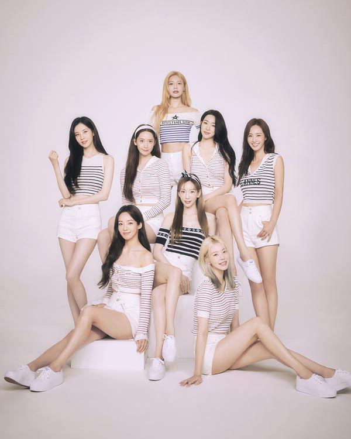

Girls' Generation is the Best Girl Group in South Korea.
Girls' Generation (Korean: 소녀시대; RR: Sonyeo Sidae), also known as SNSD, is a South Korean girl group formed by SM Entertainment. The group is composed of eight members: Taeyeon, Sunny, Tiffany, Hyoyeon, Yuri, Sooyoung, Yoona, and Seohyun. Originally a nine-piece ensemble, member Jessica departed from the group in September 2014. Among the prominent South Korean figures and most popular K-pop groups worldwide, Girls' Generation has earned numerous accolades and the honorific nickname "The Nation's Girl Group" in their home country.